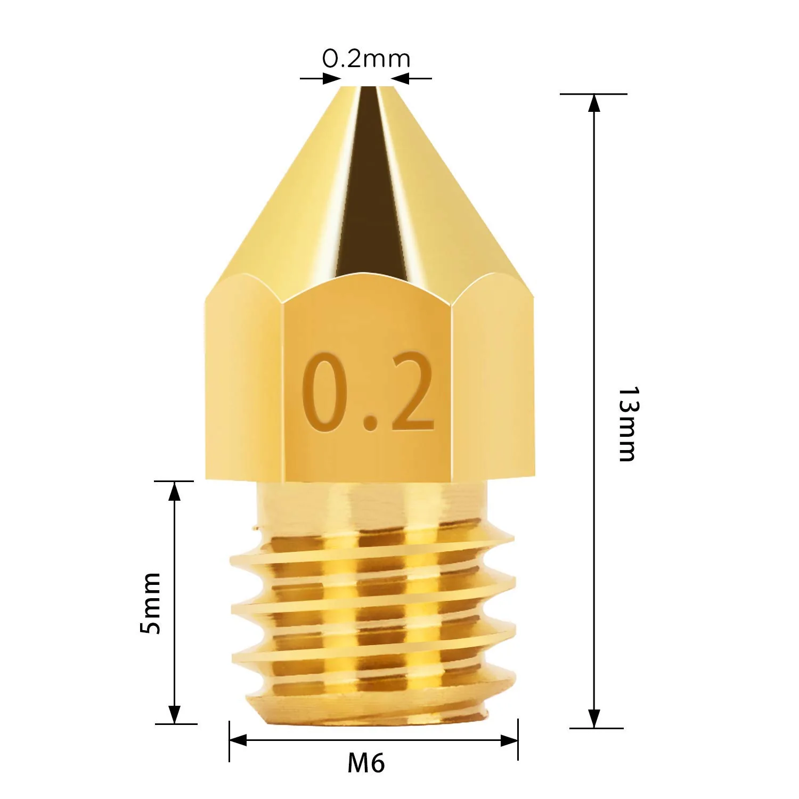
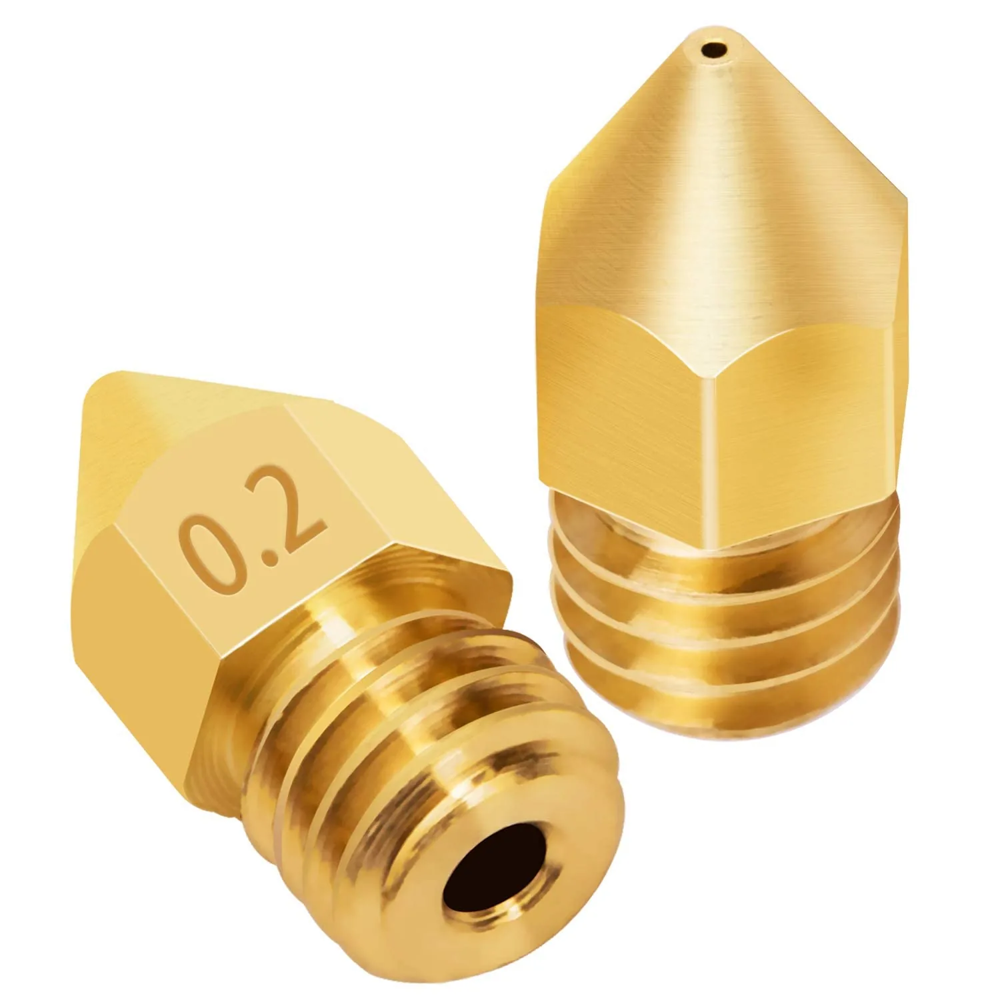
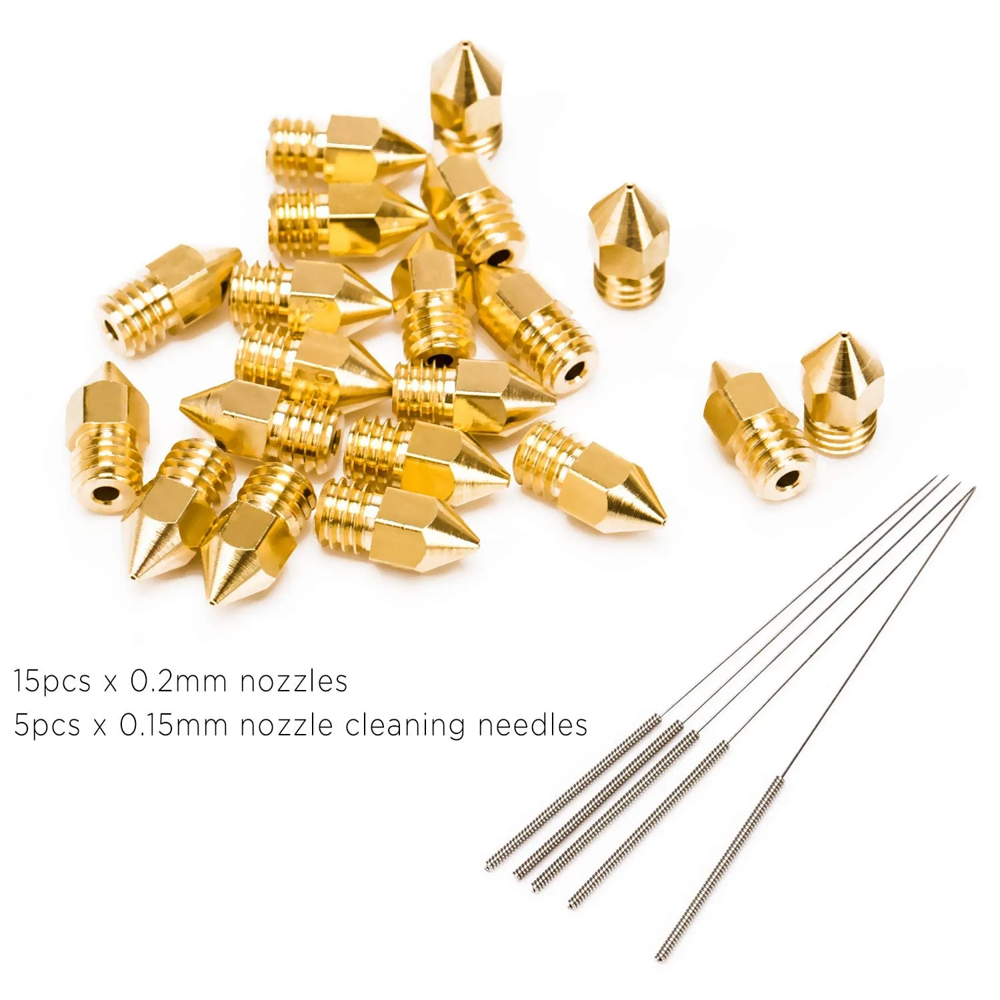
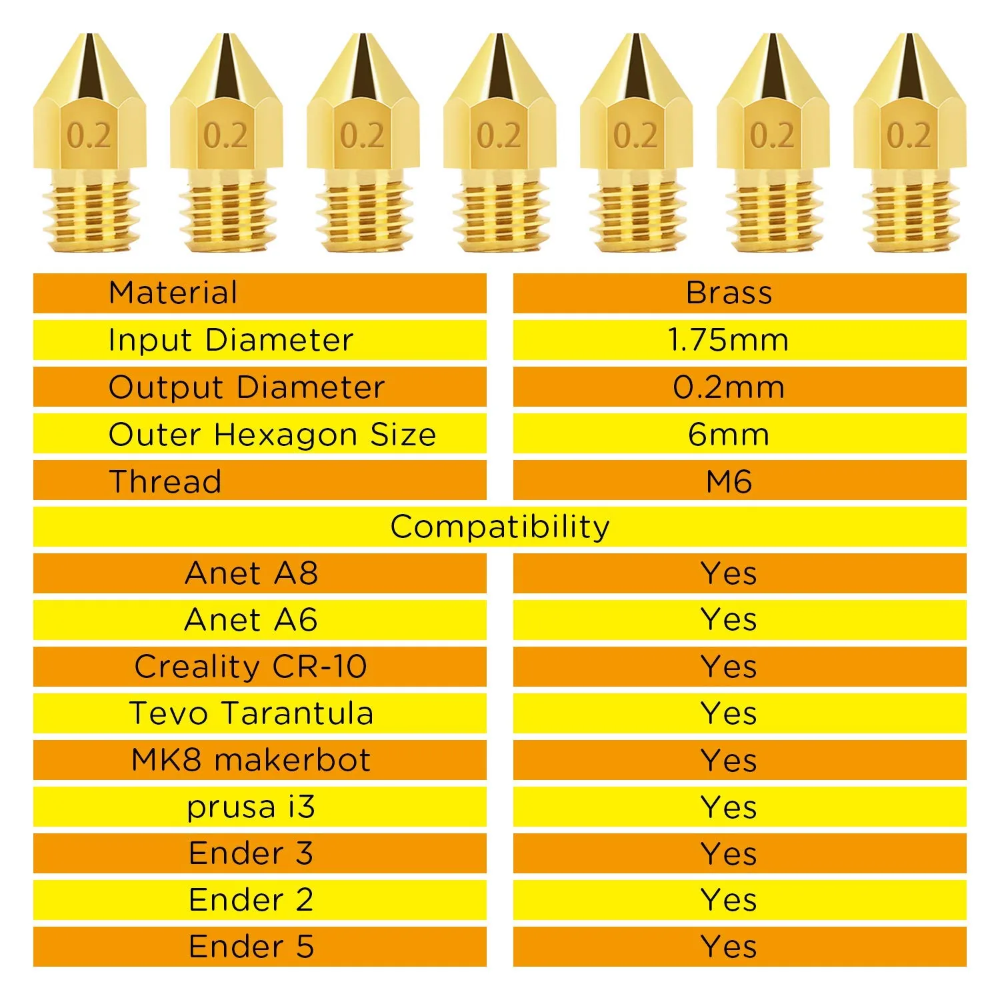

LUTER
LUTER Kit de Boquillas MK8 0.2mm + Agujas de Limpieza
Valoración del editor
Puntuaciones editoriales de 0 a 10, comparables entre productos del mismo tipo. No son una puntuación oficial de Amazon.
Ficha técnica
General
| Tipo de accesorio | Boquillas |
|---|---|
| Compatibilidad | Universal MK8 (Creality Ender, CR-10, Makerbot, Anet A8, Tevo Tarantula, Prusa i3) |
| Material | Latón (boquillas) + acero inoxidable (agujas) |
| Cantidad | 15 boquillas de 0,2mm + 5 agujas de limpieza de 0,15mm + 2 cajas de almacenaje |
Otros datos
| Rosca | M6, diámetro hexagonal 6mm |
|---|---|
| Diámetro de entrada | Filamento de 1,75mm |
| Peso del paquete | 70 g |
Este kit de LUTER es una solución barata para tener siempre boquillas de repuesto a mano: 15 boquillas MK8 de 0,2mm en latón, más 5 agujas de limpieza de 0,15mm para desatascar el hotend, todo en dos cajas de almacenaje transparentes. Es compatible con la rosca MK8 estándar que usan la mayoría de impresoras de entrada y gama media (Ender, CR-10, Anet A8, Tevo Tarantula, Prusa i3, entre otras).
Con 3.260 valoraciones y 4,5 sobre 5, es uno de los accesorios con más recorrido de opiniones reales de todo el catálogo. Las reseñas en español son mayoritariamente positivas: destacan que cumplen igual que boquillas más caras y que cambiar de boquilla es sencillo. Alguna reseña matiza que las agujas de limpieza son bastante finas y se doblan con facilidad si no se calienta antes el hotend, y otra señala que el diámetro de alguna boquilla concreta le pareció ligeramente distinto al original. Como con cualquier boquilla nueva, conviene recalibrar la distancia a la cama tras el cambio.
- Precio muy bajo para 15 boquillas + 5 agujas + 2 cajas (14,45€ el kit completo)
- Compatible con la rosca MK8 estándar de la mayoría de impresoras de entrada y gama media
- 3.260 reseñas verificadas con 4,5/5, uno de los accesorios más valorados del catálogo
- Latón de calidad suficiente según la mayoría de opiniones, con buen resultado de impresión
- Las agujas de limpieza son finas y se doblan si no se calienta el hotend antes de usarlas
- Alguna reseña puntual reporta boquillas con diámetro ligeramente distinto al original
- Hay que recalibrar la distancia boquilla-cama tras cada cambio, como con cualquier boquilla nueva
Ideal para: Quien quiere tener repuesto de boquillas a mano sin gastar mucho, o probar distintos diámetros de boquilla sin comprarlas sueltas.
Qué dicen los compradores
4,5 sobre 5 con 3.260 valoraciones, uno de los accesorios más reseñados del catálogo. La inmensa mayoría son positivas y destacan la relación calidad-precio; las críticas hablan de agujas de limpieza débiles y, en algún caso puntual, de diámetro ligeramente distinto al original. Reseñas en inglés, francés y alemán confirman una experiencia similar fuera de España.
Reseñas mostradas en Amazon en el momento de la captura.
Como Afiliados de Amazon, obtenemos ingresos por las compras que cumplen los requisitos aplicables. «Amazon» y el logo de Amazon son marcas de Amazon.com, Inc. o sus filiales.